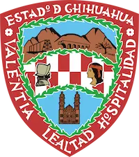

My names is Dayniz Yael Velasco Coronel and I go by Day. I was born in a beautiful state in the South of Mexico, in Oaxaca City. I grew up in a small town located between the Oaxacan coast and the Sierra Madre del Sur. I have lived in many places of my beautiful country, like Puebla, Mexico City, Guanajuato, etc. But now, I live in Nuevo Casas Grandes, Chihuahua with my family. I am currently wrking as Frontend Developer. I have two daughthers and I love spent time with them. I love to travel around of my country and getting to know new places. I love programming and facing new challenges.
Nuevo Casas Grandes, Chihuahua

Chihuahua, officially the Free and Sovereign State of Chihuahua. It is located in the northwestern part of Mexico and is bordered by the states of Sonora to the west, Sinaloa to the southwest, Durango to the south, and Coahuila to the east. To the north and northeast, it shares an extensive border with the U.S. adjacent to the U.S. states of New Mexico and Texas. The state was named after its capital city, Chihuahua City; the largest city is Ciudad Juárez.
Chihuahua is home to the archaeological site of Paquimé in Casas Grandes that was created by the people of the Mogollon civilization of Northern Mexico. It is recognized as an UNESCO World Heritage site. Chihuahua is the largest state in Mexico by area, with an area of 247,455 square kilometres (95,543 sq mi). The state is consequently is known under the nickname El Estado Grande ('The Great State' or 'The Big State').